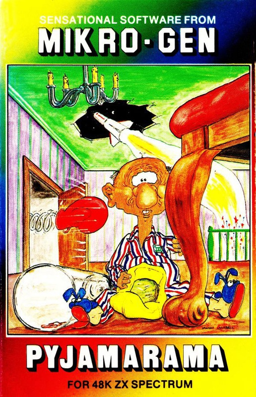
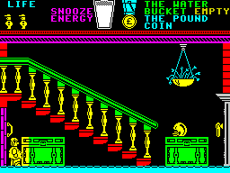
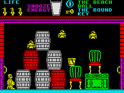

Pyjamarama


{kind=link}

| Publisher: | Mikro-Gen |
| Price: | £6.95 |
| Year: | 1984 |
| Source: | CRASH, Issue 10 |

Mikro-Gen’s worn out working class hero Wally is back again — well he’s almost back again in this new adventurish arcade game. Wally’s actually asleep in bed and in danger of not hearing the alarm clock which ought to wake him up in time to get back to work in that appalling car factory. But Wally’s having a terrible nightmare.

You star as Wally Week’s sleeping alter ego, wandering around a vast house as a pint-sized figure in pyjamas and night cap. As this is a nightmare, nothing is as it should be in the dreamscape. Apparitions waltz about the place, hands snatch at your feet from beneath the floorboards, axes fly through the air, there’s even a floor which gives you that feeling that you’re trying hard but getting nowhere. The object is to find the key that winds the alarm clock and get it to wake Wally up. You are allowed to collect objects littered all over the place which have various inter-related uses, but only two may be carried at a time.
The controls are simple, left, right and jump. Being hit by a nasty isn’t the end; above the playing screen is a glass of ‘Snooze Energy’ milk, which is drained a little bit every time you are hit and goes down steadily throughout the life. Finding some food to snack on is as important as finding the key and alarm clock. Scoring is quite a novel process — you are told how many paces Wally has walked and what percentage of the adventure has been solved.
There seems to be a move afoot from software houses to repeat use of successful heroes, and Pyjamarama is a sequel to Automania — is it as good?
CRITICISM

correct route to the objects
‘Pyjamarama has some of the best animation and realistic graphics I have ever seen. All the graphics are large, neat and smooth. As in Automania Wally is superbly done with his night cap even moving as he slides down the bannister. The game itself is very well thought out especially when it comes to finding and carrying the things that help you in your quest to find the alarm clock. Beware of the ‘Video Room’. I could not pull myself away from it for about six waves. I’ll be surprised if this isn’t a CRASH SMASH. I think it should be as it’s a lot better even than the last one from Mikro-Gen, and definitely worth getting.’
‘Okay Wally, don’t just sit there suffering from your nightmare — do something about it! Yes, this is the sequel to Automania, the manic car game. You control a sleepy Wally in his quest for the clock. If you liked Automania you will love Pyjamarama. The graphics are superb and the sound is very good. Pyjamarama is a hit in anyone’s book — it’s got everything you could ask for from a game and more — the only way I can describe it is a sort of Manic Jet Set Wally — it’s really an excellent game. You don’t score as such, you are given a percentage and how many paces you took — I suppose it’s better to have a high percentage with not having taken many paces. Quite a good idea really. The animation is a continuation of that found in Automania but with much more going on. The program’s full of neat touches and I especially like the room behind a door marked Video Games where you can play a good game of Space Invaders — so you’re really getting two games for the price of one! It’s highly playable and just a bit too addictive. Buy it — you won’t regret it!’
‘As a simple combination of imaginative graphics, large characters and humour, Pyjamarama is unbeatable, and a fine sequel to Automania. I thought it had just the right amount of frustration and play-again qualities to drive you mad — and make sure you do play again. Wally is in fine jumping form again even though he’s shrunk down to the point where tomorrow’s chicken dinner becomes a serious threat. There are surprises everywhere like the prat-fall boxing gloves which knock you down when you’re not expecting it, and it takes an experienced hand to spot the difference between a lift seen from the side and an ordinary door. Mikro-Gen have been thoughtful enough to provide a large switch, however, marked lift on/off! (But that’s in a different location). Undoubtedly an addict’s dream hit.’
COMMENTS
| Control keys: | O/P left/right and M to jump, but also user-definable |
| Joystick: | Sinclair, Kempston, but almost any via UDK |
| Keyboard play: | Very simple key use and responsive |
| Use of colour: | Marvellous, painterly use of colour although it risks some attribute problems |
| Graphics: | Excellent, large, fast and smooth, well drawn |
| Sound: | Very good |
| Skill levels: | 1 |
| Lives: | 3 (watch out for Snooze Energy) |
| General rating: | Highly addictive, playable, good value — excellent. |
| Use of computer: | 90% |
| Graphics: | 93% |
| Playability: | 94% |
| Getting started: | 91% |
| Addictive qualities: | 94% |
| Value for money: | 90% |
| Overall: | 92% |